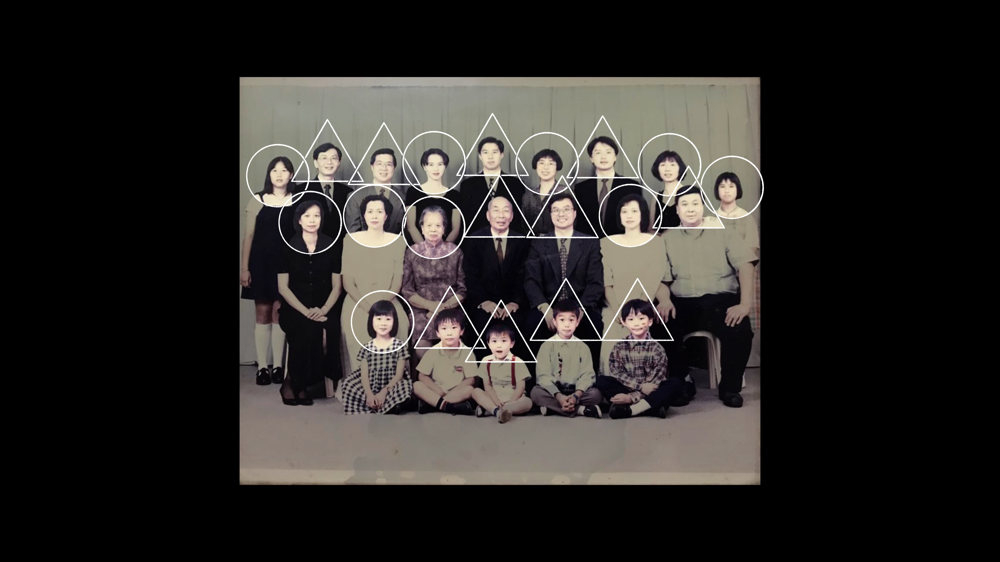

ジョイス・ラム
高山明研究室
ロンドン大学東洋アフリカ研究学院（SOAS）日本語・経済学科 卒業
慶應義塾大学大学院政策・メディア研究科 修了
香港、トロント、ロンドン、そして東京で暮らした経験から、「家族」と「国家」の関係性を探究する映像作品とレクチャーパフォーマンスを制作。編集者としても活動している。
joycetsin.com
展示歴
2019
「GEIDAI BIBLIOSCAPE 2019 – オブジェとしての本」
「イメージフォーラム映像研究所2018年度卒業制作展」
2020
「イメージフォーラム映像研究所2019年度卒業制作展」

家族に関する考察のトリロジー (2021)
アニメーション：高橋杏子
音楽：石田多朗
テクニカルディレクター：加藤和也

新異家族 (2021)

食火 (2020)